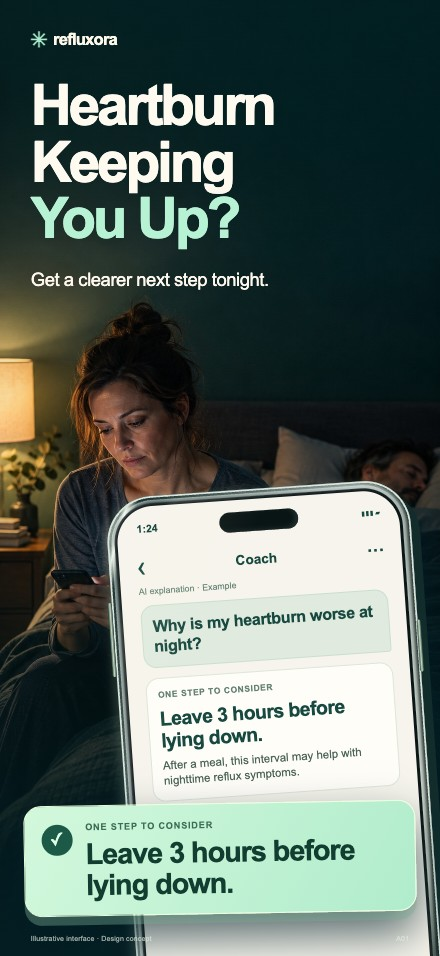
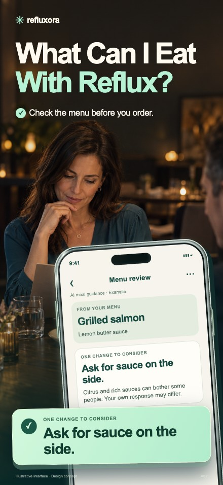
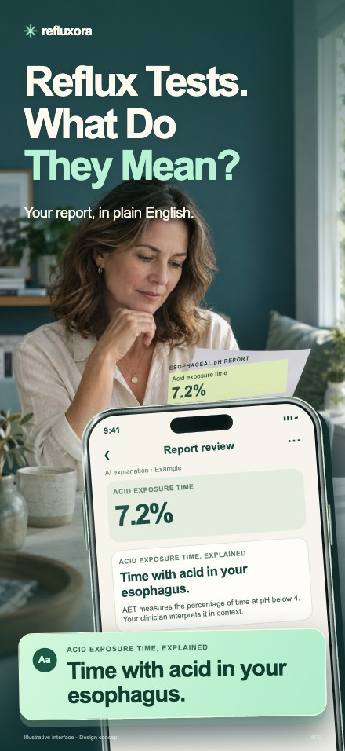

The problem.
Then one useful answer.
Heartburn at night → a food decision → an unfamiliar reflux report.
Why this order
The opening situation is recurring symptoms interrupting life. Food follows with a practical adjustment before ordering. A reflux report broadens perceived usefulness beyond food and tracking. This order is a creative hypothesis, not a measured conversion ranking.
Published patient research informs the direction: symptom impact and seeking help and experience of dietary and lifestyle changes. We did not conduct patient interviews.
{kind=link}

01 · Heartburn Keeping You Up?
Get a clearer next step tonight.
An interrupted night makes recurring heartburn personal and immediate. The meal-to-lying-down interval is a practical example, not a promise of relief.
Enlarged proof, repeated exactly inside the device: Leave 3 hours before lying down.
{kind=link}
{kind=link}

02 · What Can I Eat With Reflux?
Check the menu before you order.
The choice happens before ordering. Grilled salmon with lemon butter sauce becomes one explainable adjustment. The dish is not labelled safe and no individual trigger is predicted.
Enlarged proof, repeated exactly inside the device: Ask for sauce on the side.
{kind=link}
{kind=link}

03 · Reflux Tests. What Do They Mean?
Your report, in plain English.
The same synthetic acid exposure time of 7.2% appears on paper and in the interface. The example explains the metric without a diagnosis or threshold verdict. Third position is a creative hypothesis that broadens value beyond food and tracking.
Enlarged proof, repeated exactly inside the device: Time with acid in your esophagus.
{kind=link}
Clinical meaning of the report
Acid exposure time is the percentage of recording time with esophageal pH below 4. The 7.2% value is synthetic demonstration data, with no normal/abnormal label or diagnostic verdict. Published reflux-monitoring recommendations support the metric definition.
Visual reference and production
JewelSnap’s live M series, WatchSnap and SnapFlip informed the direct internal question, a continuous scene, material device edges and one enlarged proof. Refluxora uses its own night, restaurant and daylight photographs.
Three new photographs were made with built-in ImageGen. The tool does not expose a selectable model version; these assets are not represented as Imagen 2.5 output. Typography, demo report values, product examples, metallic device edges and proof cards are deterministic HTML/CSS.
A emphasizes the person and the situation. B enlarges the input and its explanation. Interface examples are authorized concepts, pending approval against the finished app. Export: 1320 × 2868 RGB PNG, without transparency.